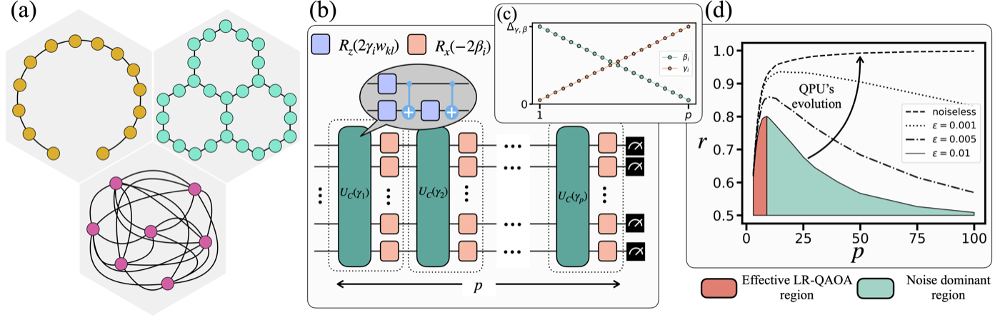

Open benchmark · updated with every new result
How far can today's quantum processors go before their output is no better than random?
We run the linear-ramp QAOA (LR-QAOA), a fixed-parameter protocol, on weighted MaxCut problems of growing width (qubits) and depth (layers p). A run passes when its approximation ratio stays above random sampling by more than 3σ. The same test works on every vendor, on three graph types.
–QPUs benchmarked
–vendors
–largest fully connected problem above random
–2-qubit gates in the deepest run above random
Loading results…
Latest results
Newest first. New result files in the repository show up here automatically.
Fully connected graphs
Every qubit interacts with every other one, so devices without all-to-all connectivity need a SWAP network. This is the hardest of the three tests.
Effective approximation ratio vs problem size
reff = 0 is the random +3σ thresholdNative layout
The problem graph matches the device's own coupling map, so no SWAPs are needed and the full chip is used at once.
Approximation ratio vs number of LR-QAOA layers
Pick up to three runs to compare; dashed line: random +3σ of the first pick1D chain
A line of qubits with nearest-neighbour couplings: the easiest graph to map, so it probes the greatest depth.
Approximation ratio vs number of LR-QAOA layers
Pick a chain length, then up to three runsMethod

LR-QAOA fixes the QAOA angles to a linear ramp: γ rises and β falls over p layers, with slope Δ/p. No classical optimisation loop is needed, so the protocol runs the same way on any device and at any size.
In a noiseless device the approximation ratio r grows with p. Noise eventually wins: r peaks and decays towards the value of a uniformly random sampler, the fully mixed state.
Results are grouped by graph type because routing cost differs: a fully connected graph needs SWAP networks on fixed-coupling chips, while 1D chains and native layouts map directly.
- Approximation ratio r
- Mean cut value of the sampled bitstrings divided by the optimal cut.
- Random baseline
- Mean and 3σ spread of r for the same number of uniformly random bitstrings, bootstrapped from stored random samples.
- Above random
- The best r exceeds the random mean with one-sided p-value < 10−3.
- Effective ratio reff
- (r − threshold) / (1 − threshold), with threshold = random mean + 3σ. Positive values clear the 3σ band.
- 2-qubit gates
- p × number of graph edges (logical ZZ interactions, before SWAP routing).
Data & contributing
Every number on this page is computed from the raw result files in the repository on each push. Nothing here is typed in by hand.
Add a result
Save the experiment as Data/<backend>/<N>_<FC|1D|NL>.npy, with its postprocessing and random entries, and push to main. The page rebuilds within a few minutes.
Download
All processed runs, one JSON file: results.json. Raw .npy files and notebooks are on GitHub.
Awaiting post-processing
- None
Cite
@misc{montanezbarrera2025evaluating,
title={Evaluating the performance of quantum processing units at large width and depth},
author={J. A. Montanez-Barrera and Kristel Michielsen and David E. Bernal Neira},
year={2025},
eprint={2502.06471},
archivePrefix={arXiv},
primaryClass={quant-ph}
}